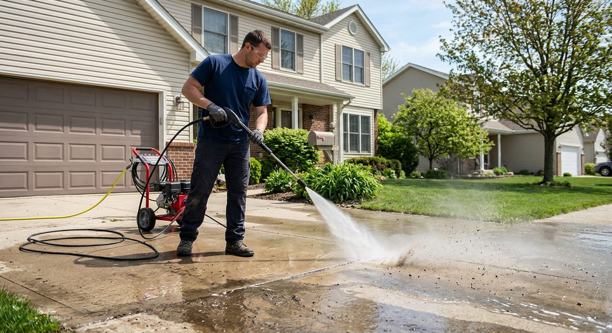

Properties in our region take a beating from seasonal swings. Freeze-thaw cycles, heavy rain, humidity, and summer heat all create wear in different ways. A simple maintenance calendar helps prevent small issues from quietly turning into expensive repairs.
Spring Priorities
- Inspect roof, flashing, and gutters after winter weather
- Check for exterior cracks, moisture stains, and peeling paint
- Service cooling systems before peak heat arrives
Summer Priorities
- Monitor HVAC performance and thermostat accuracy
- Pressure wash high-exposure surfaces and drainage zones
- Address exterior sealant, siding, and deck wear
Fall Priorities
- Clear gutters and drains before leaf buildup becomes blockage
- Inspect caulking, windows, and doors for air leaks
- Test heating systems before cold weather is fully in place
Winter Priorities
- Watch for pipe freezing risk in vulnerable areas
- Monitor interior moisture, drafts, and insulation weak spots
- Check walkways, stairs, and entry points for safety issues
What Commercial Properties Should Not Ignore
High-traffic spaces wear down faster. Flooring transitions, restroom fixtures, lighting, door hardware, break-room plumbing, and exterior access points need more frequent attention because they affect both appearance and operations.
Why This Matters
Deferred maintenance rarely stays cosmetic. Water gets deeper, cracks spread, finishes fail faster, and emergency calls tend to happen at the worst possible time.
Build a Repeatable Routine
The goal is not a perfect property. The goal is a repeatable system: inspect, document, prioritize, and fix the items that create the most downstream cost or risk. That is how maintenance supports both property value and operational stability.